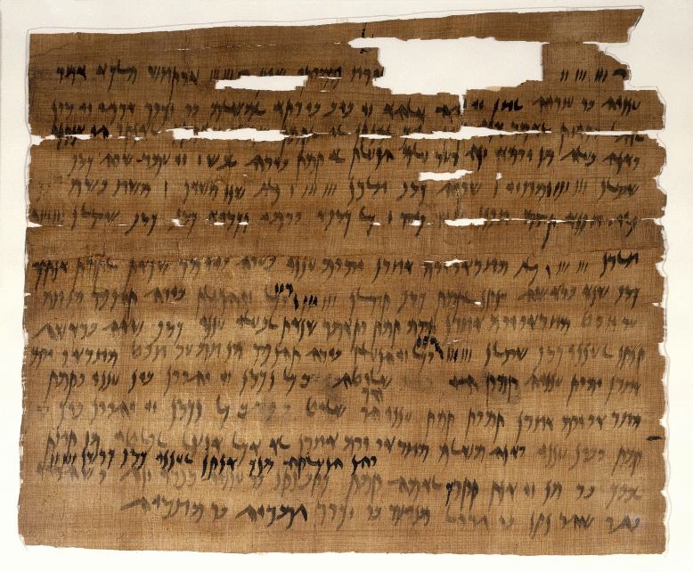
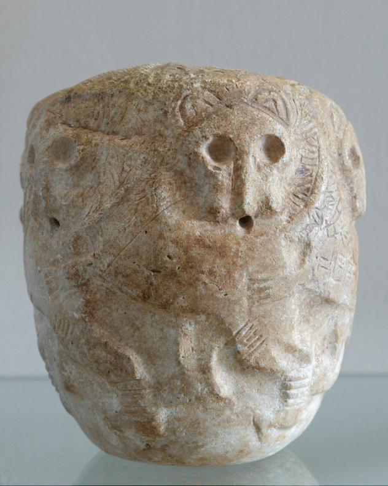
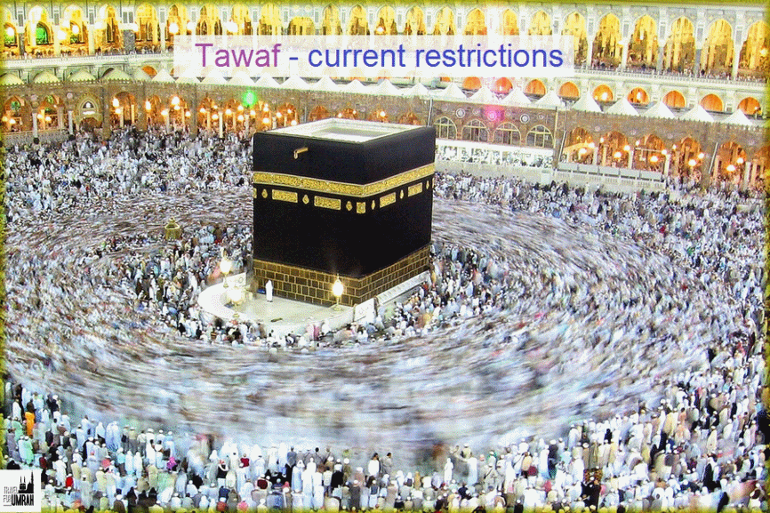
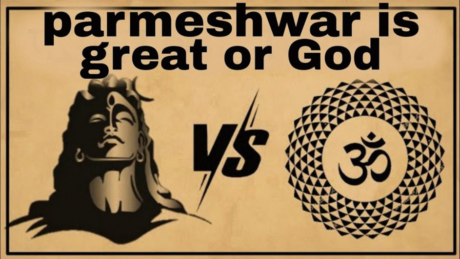
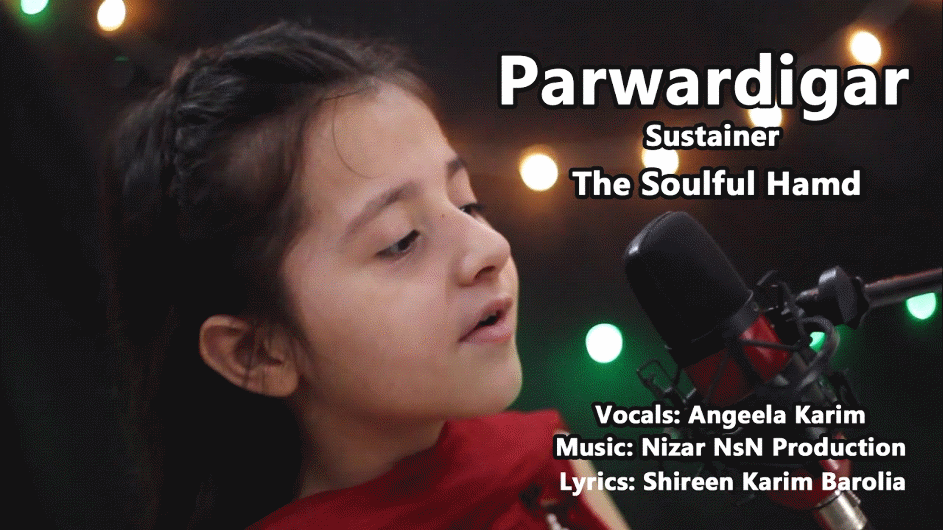
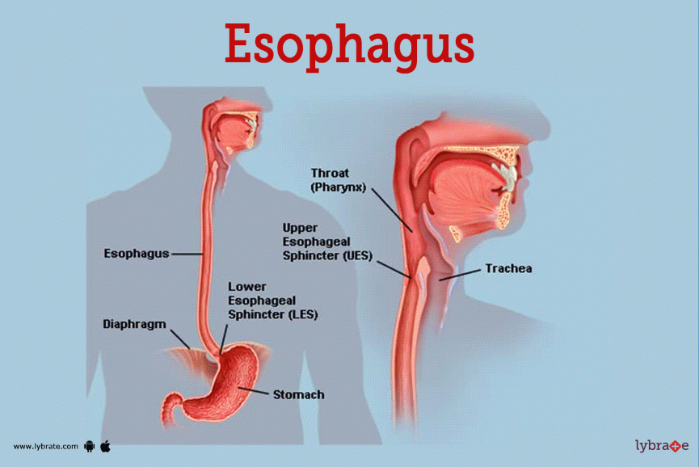

Arabic words in the Bible
Bismillah means "In the name of G-d" in Hebrew Bible
https://biblehub.com/text/ezra/5-1.htm
Arabic Hebrew Alphabets mapping.
http://www.semiticroots.net/index.php/site/mergers
Arabic Alphabets likely represent picture.
Allah أ ل ه root
https://corpus.quran.com/qurandictionary.jsp?q=Alh
Bible אֱלֹ֔הַ = أ ل ه same root.
https://biblehub.com/hebrew/433.htm
https://biblehub.com/hebrew/426.htm
https://biblehub.com/hebrew/430.htm
"EL" G-d in Hebrew. Like in the name "Ishma-el"
https://biblehub.com/hebrew/410.htm
G-d in the Bible is Eloah. Same spelling can be pronounced as Allah.
Ayatollah means 'Sign from G-d" In Hebrew א֔וֹת and אֱלֹהֶ֑. In Christanity Isaiah 7:11 is about Christ Birth. So the Virgin Birth of was "Ayatollah".
https://biblehub.com/text/isaiah/7-11.htm
“Allahu Akbar†. Akbar is derived from كبير" (kabir). Bible says G-d is ×›Ö·Ö¼Öבִּיר Kabir:
https://biblehub.com/text/job/36-5.htm
Abdullah Servant of G-d. עבד־ה××œ×”×™× . Accoding to Christanity Servant of G-d in Isaiah 53 is Christ.
https://biblehub.com/text/daniel/9-11.htm
Rabbi Tovia Singer about the name "Allah"
https://www.youtube.com/watch?v=Z4ZeZ5bSR6U
Muslim from S-L-M root
https://corpus.quran.com/qurandictionary.jsp?q=slm
"Muslim" in pronounced "Meshullam" derived from S-L-M root (Salem, Salaam, Shalom)
https://en.wikipedia.org/wiki/%C5%A0-L-M
https://quranicnames.com/salim/
S-L-M root in the Bible. Brown-Driver-Briggs section resign or submit oneself, especially to God, whence participle Muslim, and infinitive Isl¹m properly submission to God;
https://biblehub.com/hebrew/7999.htm
The word "Muslim" ××©×œ× (Meshullam) is used in Isaiah 42:19. Translated as "he who is perfect" by KIng James. New American Standard Bible translates "Muslim" to" one who is at peace with Me" (Peace with G-d)
https://biblehub.com/isaiah/42-19.htm
Meshullam translates as PeaceMaker
See the link below for: The name Meshullam is among the most popular in the Bible (and note that this name is also highly similar to the familiar proper name Muslim).
https://www.abarim-publications.com/Meaning/Meshullam.html
Meshullam means surrendered one to G-d.
Ellicott's Commentary for English Readers says "As he that is perfect.—Strictly speaking, the devoted, or surrendered one. The Hebrew meshullam is interesting, as connected with the modern Moslem and Islam, the man resigned to the will of God."
https://biblehub.com/commentaries/isaiah/42-19.htm
"Meshullam" , "resigned" or "devoted"; compare Arabic Muslim; Mesollam)
https://www.internationalstandardbible.com/M/meshullam.html
From 449 BC "Messhullam" (Muslim) name was used Brooklyn museum
https://www.brooklynmuseum.org/opencollection/objects/3488

Mesilim (Sumerian: 𒈨𒁲),[3] also spelled Mesalim (c. 2600 BC), was lugal (king) of the Sumerian. Orthographic borrowing from Sumerian 𒁲 (silim, “to be whole, healthy”).
From 2600 BC "Mesalim" = Muslim
https://en.wiktionary.org/wiki/%F0%92%81%B2
https://en.wikipedia.org/wiki/Mesilim

Symmachus 2000 yeas ago translated "Meshullam to Greek "Teleios". See the link below Barnes' Notes on the Bible Greek traslated "Meshullam" to Symmachus renders it, Ὡς ὁ τεÌλειος hoÌ„s ho teleios. New Testament says Christ is "Teleios" (Perfect) and he ask his followers to be "Teleios" (Perfect). Teleios most of the time translates to "Salem" or "Meshullam" (Muslim).
https://biblehub.com/commentaries/isaiah/42-19.htm
Teleios (translates to Hebrew Salem/Meshullam) means " the completeness of Christian character."
https://biblehub.com/greek/5046.htm
If you want to become "Teleios" (translates to Hebrew Salem/Meshullam) follow Christ .
https://biblehub.com/text/matthew/19-21.htm
'Muhammed" from Hamd (Arabic: Øمد, romanized: ḥamd, lit. 'praise')
https://biblehub.com/hebrew/2530.htm
'Muhammed" in Hebrew מַחְמָד machmad
https://biblehub.com/hebrew/4261.htm
One of the Titles of Christ "Altogether lovely" Song of Solomon 5:16
Link below is long list, Serch for "Altogether lovely" or look at the last line of "Allusions, Characteristics and Epithets: section.
https://www.blueletterbible.org/study/parallel/paral19.cfm
Christ "Altogether lovely"
https://www.amazon.com/Christ-Altogether-Lovely-Meditations-Savior/dp/1946971766
" Song of Solomon 5:16 ×Ö·×—Ö²Ö¼×Ö·×“Ö´Ö¼Ö‘×™× "Lovely" is from "Muhammed". So the title of Christ is "Muhammed"
https://biblehub.com/text/songs/5-16.htm
https://www.abarim-publications.com/Meaning/Muhammad.html
"Masjid" from sajdah (سجدة,) , Sujūd (Arabic: سُجود) Hebrew סָגַד sagad or Sigd.
https://biblehub.com/hebrew/5456.htm
Sigd (ስግድ, 'Prostration', Hebrew: סיגד, also romanized Sig'd[1]), also Mehlella (Ge'ez: ምህላ, lit. 'Supplication') or Amata Saww (ዐመተ ሰወ, 'Grouping Day'), is one of the unique holidays of the Beta Israel (Ethiopian Jewish)
The word Sigd itself is Ge'ez for "prostration" and is related to Imperial Aramaic: סְגֵד sgēd "to prostrate oneself (in worship)".[3][4] The Semitic root sgd is the same as in mesgid, one of the two Beta Israel Ge'ez terms for "synagogue" (etymologically related to Arabic: مَسْجِد masjid "mosque", literally "place of prostration"),
https://en.wikipedia.org/wiki/Sigd
Quran from Q-R-A root
https://corpus.quran.com/qurandictionary.jsp?q=qrA
Bible Q-R-A root. Brown-Driver-Briggs section shows Quran.
https://biblehub.com/hebrew/7121.htm
Bible is called "Miqra" from Q-R-A root.
https://biblehub.com/hebrew/4744.htm
Miqra'ot is used for Bible.
https://www.amazon.com/Commentators-Bible-Exodus-Miqraot-Gedolot/dp/0827608128
Hajj Exodus 5:1 says "Let My People Go" for Hajj.
https://biblehub.com/hebrew/2287.htm
Exodus 5:1
https://biblehub.com/text/exodus/5-1.htm
Moses (pbuh) said let my people go for Hajj
Moses (AS) Father -in -Law was also known as Chobab (Habab). So Mohabbat and Mahboob are also Hebrew words,
Sadaqah is Tzedakah
https://biblehub.com/hebrew/6666.htm
Shahada (Arabic: الشَّهَادَةُ) SH-Ha-Da root.
https://biblehub.com/hebrew/7717.htm
Salah (Arabic: الصلاة) ص-ل-و root.
https://corpus.quran.com/qurandictionary.jsp?q=Slw
Sawm Arabic: صوم
https://biblehub.com/hebrew/6684.htm
Zakat ز -ك- و root
https://corpus.quran.com/qurandictionary.jsp?q=zkw
Bible Hub zakah.
https://biblehub.com/hebrew/2135.htm
Hebrew Words
Menorah ( Hebrew: ×Ö°× ×•Ö¹×¨Ö¸×” ) from "Noor" /(Madina Munawara). Menorah = Munawara
https://biblehub.com/hebrew/4501.htm
Arabic ن و ر root. Munir
https://corpus.quran.com/qurandictionary.jsp?q=nwr
Yom Kippur. Kippur from Al-Kaffarah
https://biblehub.com/hebrew/3725.htm
From ك ٠ر root.
https://biblehub.com/hebrew/3724.htm
Arabic ك ٠ر root
https://corpus.quran.com/qurandictionary.jsp?q=kfr
Passover חַג הַפֶּסַח Ḥag haPesaḥ, lit. 'Pilgrimage of the Passing Over'. חַג = Hajj.
https://biblehub.com/hebrew/2287.htm
Pidyon haben (Hebrew: פדיון הבן). Pidyon = Fidyah or fidya (Arabic: الفدية)
https://en.wikipedia.org/wiki/Pidyon_haben
Rosh Hashanah (Hebrew: רֹ××©× ×”Ö·×©Ö¸Ö¼×× Ö¸×”) from Hashanah from سنة Year.
Arabic س ن و root
https://corpus.quran.com/qurandictionary.jsp?q=snw
Shima Israel prayer Shima from سَمِيع
Arabic س م ع
https://corpus.quran.com/qurandictionary.jsp?q=smE
Shima Israel saya G-d is "Echad" and Ahad (Hebrew: אחד) (Arabic: اØد)
Ahad from أ Ø Ø¯
https://corpus.quran.com/qurandictionary.jsp?q=AHd
Hebrew Echad = Ahad.
https://biblehub.com/hebrew/259.htm
Tawhid[a] (Arabic: تÙوْØÙيد) from و Ø Ø¯ root. Wahid.
https://corpus.quran.com/qurandictionary.jsp?q=wHd
Hebrew יָחַד yachad is Wahid
https://biblehub.com/hebrew/3161.htm
The Greek word monotheism ( Mono translates to Wahid/Tawhid).
So in Christian Bible G-d is Wahid and Ahad. One and Only. (Tawhid)
Samuel (Uncle Sam) is means "Name of G-d) almost same as "Bismillah".
https://biblehub.com/hebrew/8050.htm
Benjamin = Binyamin = Son of Yemen.
https://biblehub.com/hebrew/1144.htm
Hebrew Amen (Hebrew: אָמֵן, Arabic: آمين, ʾāmīn)
Mu'min or mumin (Arabic: مُؤْمِن) is Bibical Hebrew also.
Arabic أ م ن root
https://corpus.quran.com/qurandictionary.jsp?q=Amn
Hebrew
https://biblehub.com/hebrew/539.htm
Tobey is from Tayyab/Tooba.
Levi is Arabic wali/Mawlawi

Arabic words
The word Typhoon from the same root as Tawaf Arabic طَوَاف
Mandarin å¤§é£ (dà fēng, “big wind”), Cantonese 大風ï¼å¤§é£ (daai6 fung1, “big wind”), via Arabic طُوفَان (á¹Å«fān), Hindi तूफ़ान (tūfān), and Persian توفان (tufân). Ancient Greek Τυφῶν (Tuphôn, “Typhon, father of the winds”) i


Quran (call upon/announce) is also a Hebrew word and it is in Hebrew Bible. Used in Psalm 50:15 וקר×× ×™

Accoding to Biden's 1884 Haydock Douay-Rheims Bible, the Hebrew word ××©×œ× "Meshullam" = The Turks call "believers" Musselmans. Which is "Muslman" or "Muslims". Therefore "Muslim" is a Holy word in Christianity. The word "Muslim" is a noun drive from adjective "Salem". The noun form of "Salem" is "Mu + Salem" (Mu is just prefix.)
"Salem"is a Holy word in Christianity and it means "Peace". So the Bible translated "Muslim" as "PeaceMakers".
Salem is holy word in Christianity. It is adjective form. The noun form of the word is Muslim. Muslim = Mu + Salem. “Mu†is prefix. Meshullam in Hebrew. Salem linked to the Hebrew word Shalom.

The Hebrew word Karaite or Qara'it is the Arabic قَرَأَة to read Quran. Jewish Bible is called "Miqra" in Hebrew which is derived from قَرَأَة or Quran.
The name Muhammad is a noun derived from Hebrew/Arabic HMDroot. The adjective from of Muhammad is Hemda Hebrew: חֶמְדָּה Pronunciation: Chemda Meaning: The meaning of the name is desire, love .Desired object, beautiful thing. "אֶרֶץ חֶמְדָּה" (a pleasant land) is an appellation of Israel:"But I said: 'How would I put thee among the sons, and give thee a pleasant land, the goodliest heritage of the nations/" (Jeremiah 3:19).
Tannur ×ªÖ·Ö¼× Ö¼×•Ö¼×¨ (Tandoor ), Arabic tannūr (تنّور), is in the Bible for stove, firepot
Bibical Isreal was always a Kingdom. Modern State of Israel is not Biblical Israel. Bible says Israel will always have a King. Only during exile there will be no King.
Biblical Greek/ Urdu/ Sanskrit words
2000 Years ago Greek translated "Muslim" to Ï„Îλειος "Teleios"
The New Testament is written in Greek. The Hebrew Translation of the New Testament says Christ is "Meshullam" (Muslim in Arabic).
https://biblehub.com/greek/5048.htm
Brit Chadashah is the Hebrew Translation of the Greek New Testament. Septuagint is the Greek translation of the Hebrew Old Testament. Septuagint is written about 2000/2300 years ago. Brit Chadashah is written 100/200 years ago. Brit Chadashah use the mapping between Hebrew and Greek words using Septuagint. The word "Chadashah" is Arabic word Hadith (/Arabic: Øديث). Brit Chadashah says Christ is "Meshullam" (Muslim in Arabic) in Hebrews 7:28.
Brit Chadashah translated "Teleios" to in Hebrew 5:9 to "Salem". In Englis "Perfect". His submission made in "Perfect" (in Arabic Salem/Muslim).
Hebrew 5:7-9
During the days of Jesus’ life on earth, he offered up prayers and petitions with fervent cries and tears to the one who could save him from death, and he was heard because of his reverent submission. 8Son though he was, he learned obedience from what he suffered 9and, once made perfect, he became the source of eternal salvation for all who obey him 1
Synagogue = Hindi/Urdu “Samaj”. The word is used for gathering in Hindu Temple.
Urdu Namaz derived from Hindi Namaste.

Pakistan, Hindustan etc (“Stan†) from the English “State†like United State
https://en.wiktionary.org/wiki/Reconstruction:Proto-Indo-European/steh%E2%82%82-
https://en.wiktionary.org/wiki/%E0%A4%B8%E0%A5%8D%E0%A4%A5%E0%A4%BE%E0%A4%A8#Sanskrit
Khuda خدا Zoroastrian G-d name.
Shaoreoro (Shahriyar)

In modern Persian the descendant of *khshathrapavan is shahrbān (شهربان), but the components have undergone semantic shift so the word now means "town keeper" (shahr شهر meaning "town" + ban بان meaning "keeper").
https://en.wikipedia.org/wiki/Satrap
Parmeshwar is "Prime + Ishwar"

Parwardigar is English = Prime + warden /guardian.

Urdu پابندی = Paw + Bound = پاؤں + بندی
Bandana from Hindi (bandhan, “he ties”) بندها
Bandage, James Bond, Bond also from Sanskrit
Physema from Urdu پھیپھڑا (Lung)
https://en.wiktionary.org/wiki/patella
From Latin patella (“a small pan or dish, a plate; the kneepan, patella”). Urdu پتیلا .
https://en.wiktionary.org/wiki/oesophagus#English
From two Bibical Greek words
φÎÏω (phérō, “I carry”) + ἔφαγον (éphagon, “I ate”).
φÎÏω = same root as Bharat (India). Urdu بھرنا, Bharna to fill.
ἔφαγον = same root as bhagwan (G-d). bhag fortune. Urdu Bakht fortune (may be food)

America = Henry = Home + Ric = Home + Raja (Hindi) = کھیت + Raja
https://en.wiktionary.org/wiki/%E0%A4%B0%E0%A4%BE%E0%A4%9C%E0%A4%A8%E0%A5%8D#Sanskrit
From Proto-Indo-European *h₃rḗǵ-ō. Cognate with Latin rēx (“king”), Welsh rhi. Also compare राजॠ(rāj, “king”).
https://en.wiktionary.org/wiki/Reconstruction:Proto-Indo-European/t%E1%B8%B1ey-
https://en.wikipedia.org/wiki/Henry_(given_name)
Same name diffrent pronunciations
Harrison (surname), Henson (surname), Harris (surname), Heaney (Irish surname), Fitzhenry (Irish Hiberno-Norman surname), Heinz (German surname), EnrÃquez (Spanish surname), Henriques (Portuguese surname), Heney, Henney, Hendrick, Hendricks, Hinrichs, Hendrickx, Hendriks, Hendrikx, Hendrix, Hendryx Henderson Hendrickson Henderickson